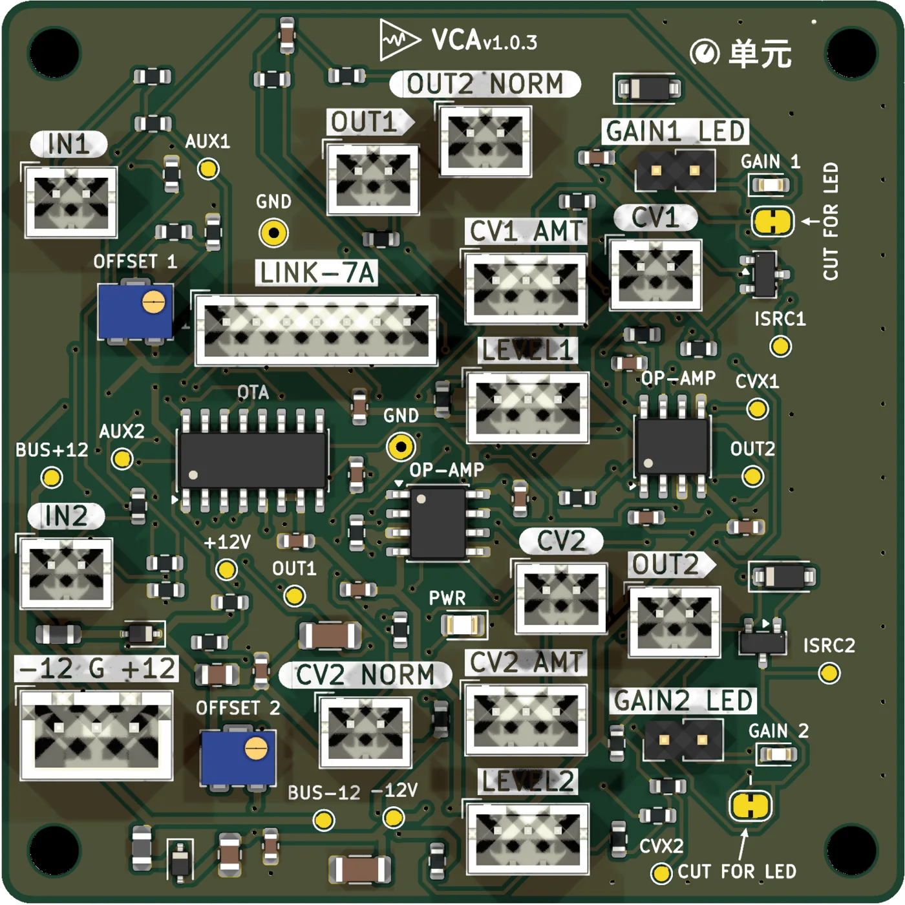
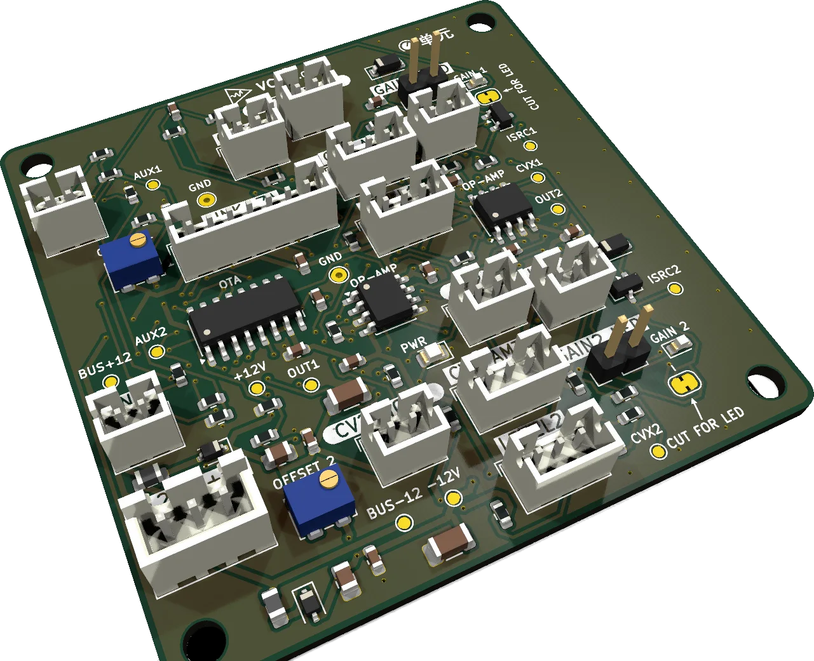
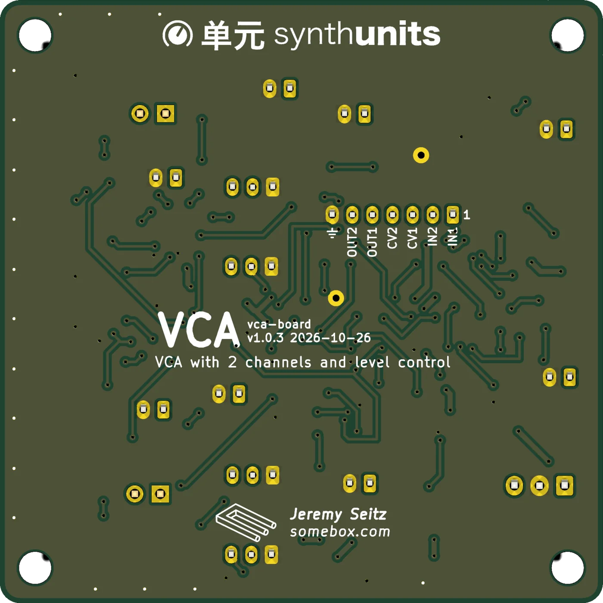
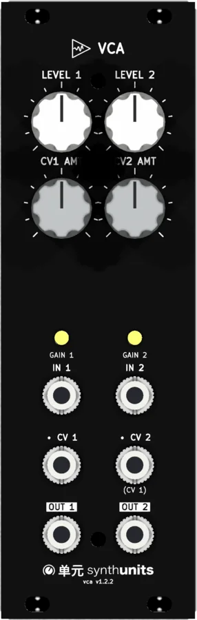

VCA: two linear channels
Two linear VCAs on one dual OTA, each with CV amount and level, normalled so one CV can drive both.
Two linear VCAs on one dual OTA, on a 60 × 60 mm board. Each channel feeds its input through a divider into the OTA; a PNP current source sets the OTA's bias current, and an op-amp turns the OTA's output current back into a voltage. The control current is the sum of the CV (through its CV AMOUNT pot) and a LEVEL pot, so a channel can sit open as a plain attenuator, or closed and following an envelope.
The response is linear in CV, so an envelope's exponential segments come out as they are. A small bias pulls each control node a little negative, so the VCA closes fully even with an envelope resting a few millivolts above zero.
Two normals make it useful on its own: CV 2 follows CV 1 until something is patched into it, and OUT 2 sums into OUT 1, inverted, until a cable goes into OUT 2. The on-board GAIN LEDs sit in the control current itself, so their brightness shows each channel's gain.
- Status
- Being made
- Version
- v1.0.3 (2026-10-26)
- Board
- 60 × 60 mm, 2 layers
- First order
- 5 boards, 2 assembled by the fab
- Rough price
- about $35–40 (how)
- Progress
- follow its tracking issue




Block diagram
Drawn by the site's generator from the board's own data: its blocks, its connectors and the links between them. The pots and switches are listed in the block they set.
What it does
- Two channels, each with IN (100 kΩ), OUT (through 1 kΩ), CV, CV AMOUNT and LEVEL (Alpha 9 mm B10K).
- Gain: unity at about +8 V of CV with CV AMOUNT full (simulated; on a real OTA expect 8.3 to 8.8 V), linear in CV; LEVEL alone up to about 0.9.
- Closed: a negative CV holds it shut. Simulated with the offsets that used to leak 9 mV: 13 nV out for a 5 V input.
- Distortion, simulated: about 0.8 % third harmonic at ±5 V in, from the OTA's curve.
- CV input load: about 6.4 kΩ (3.2 kΩ with CV 2 normalled to CV 1), so a source with a 1 kΩ output gives a little less depth.
- Power: about 8 mA on each rail, plus about 1 mA per LEVEL pot, estimated.
- Board: 60 × 60 mm, 2 layers, four M3 holes.
Connections
| Connector | Wire to | Housing | Pins |
|---|---|---|---|
| IN1 | a jack (Thonkiconn) | JST PH, 2 pins, top entry | 1 tip, 2 GND |
| OUT1 | a jack (Thonkiconn) | JST PH, 2 pins, top entry | 1 tip, 2 GND |
| CV1 | a jack (Thonkiconn) | JST PH, 2 pins, top entry | 1 tip, 2 GND |
| CV1 AMOUNT (B10K) | a pot (Alpha 9 mm B10K) | JST PH, 3 pins, top entry | 1 CCW, 2 wiper, 3 CW |
| LEVEL1 (B10K) | a pot (Alpha 9 mm B10K) | JST PH, 3 pins, top entry | 1 CCW, 2 wiper, 3 CW |
| IN2 | a jack (Thonkiconn) | JST PH, 2 pins, top entry | 1 tip, 2 GND |
| OUT2 | a jack (Thonkiconn) | JST PH, 2 pins, top entry | 1 tip, 2 GND |
| CV2 | a jack (Thonkiconn) | JST PH, 2 pins, top entry | 1 tip, 2 GND |
| CV2 AMOUNT (B10K) | a pot (Alpha 9 mm B10K) | JST PH, 3 pins, top entry | 1 CCW, 2 wiper, 3 CW |
| LEVEL2 (B10K) | a pot (Alpha 9 mm B10K) | JST PH, 3 pins, top entry | 1 CCW, 2 wiper, 3 CW |
| OUT2 NORM | panel-jack J2 (the jack's switch contact) | JST PH, 2 pins, top entry | 1 normal, 2 GND |
| CV2 NORM | panel-jack J2 (the jack's switch contact) | JST PH, 2 pins, top entry | 1 normal, 2 GND |
| POWER (1 -12V, 2 GND, 3 +12V) | a the power board output (straight-through JST XH lead) | JST XH, 3 pins, top entry | 1 −12 V, 2 GND, 3 +12 V |
| LINK | a lead to another module, or open | JST PH, 7 pins, top entry | 1 IN_AUDIO1, 2 IN_AUDIO2, 3 CV_VCA1, 4 CV_VCA2, 5 OUT_VCA1, 6 OUT_VCA2, 7 GND |
Every panel control has its own connector with a fixed pinout, so any lead of the right size fits any module. Pin 1 is the square pad.
LEDs
On the board: GAIN 1 (yellow), GAIN 2 (yellow), PWR (green). Pads for a panel LED: GAIN1 LED, GAIN2 LED.
Wiring and setup
- Power: a 3-pin JST XH lead (1 −12 V, 2 GND, 3 +12 V) from one of the power hub's outputs, with a ferrite and a series Schottky on each rail. Check each lead with a meter first.
- Panel: 6 jacks (IN1, OUT1, CV1, IN2, OUT2, CV2) and 4 Alpha 9 mm B10K pots (CV1 AMOUNT, LEVEL1, CV2 AMOUNT, LEVEL2), each on its own top-entry JST PH connector: jacks 2-pin (1 tip, 2 GND), pots 3-pin (1 CCW, 2 wiper, 3 CW).
- Normals: wire OUT2's and CV2's jack switch contacts (the jack breakout's second connector) to OUT2 NORM and CV2 NORM. Leave them open and nothing changes.
- GAIN LED pads: a panel LED goes in series with the on-board one. Cut the bridged solder jumper beside the pads and wire the LED, anode to the square pad; no resistor. With the jumper cut and no LED, that channel is off.
- LINK-7A: 1 IN1, 2 IN2, 3 CV1, 4 CV2, 5 OUT1, 6 OUT2 (before their 1 kΩ), 7 GND. The CV inputs there are 18 kΩ, unity at +8 V.
- Front panel: the series' shared 8 HP layout, with the board sideways behind it on a printed sled.
- Calibrate each channel's offset trimmer (multi-turn): nothing at the input, LEVEL at 0, a square wave into CV; trim until the square no longer comes through.
Limits and open questions
- Not built. Simulated with an ideal, offset-free OTA, so the real CV feedthrough depends on the trim.
- The on-board GAIN LEDs carry the control current. A reversed or missing one silences its channel, and this board has no bypass jumper, so their orientation is the first thing to check.
- The OTA's offset moves with its control current, so a trimmed channel can still pass a small step on a fast 0 to 8 V CV, about 7 mV typical.
- The OUT 2 normal subtracts: with the same signal in both channels, OUT 1 sounds thin until OUT 2 is patched. That is by design.
- Linear only. An exponential response, for percussive envelopes, is a later variant.
Development notes
- The current source, divider and current-to-voltage stage follow Electric Druid's article on a vintage Eurorack VCA with this kind of OTA (CC BY-NC-SA: studied, not copied) and the datasheet's application circuit. I recalculated the values for unity at +8 V.
- A review widened the offset trim's range and lowered the most control current the CVs can reach, below the OTA's limit. The bias that closes it fully came from Kassutronics' dual VCA, the normals from an idea in Mutable Instruments' Veils.
- The input divider is a middle path between clean and gritty; two resistors change it to taste.
- Next: build it, then check the gain law and the thump on the bench. A later revision adds an open jumper across each GAIN LED, as the Eurorack voice has.
Schematic
The schematic as drawn, with each chip named by its function rather than its part number. The design isn't open source yet, so there are no files to download.


Would you use a VCA? A thumbs-up on its tracking issue is how I count interest, and you can subscribe there to follow its bring-up. Questions and ideas go to the discussions.